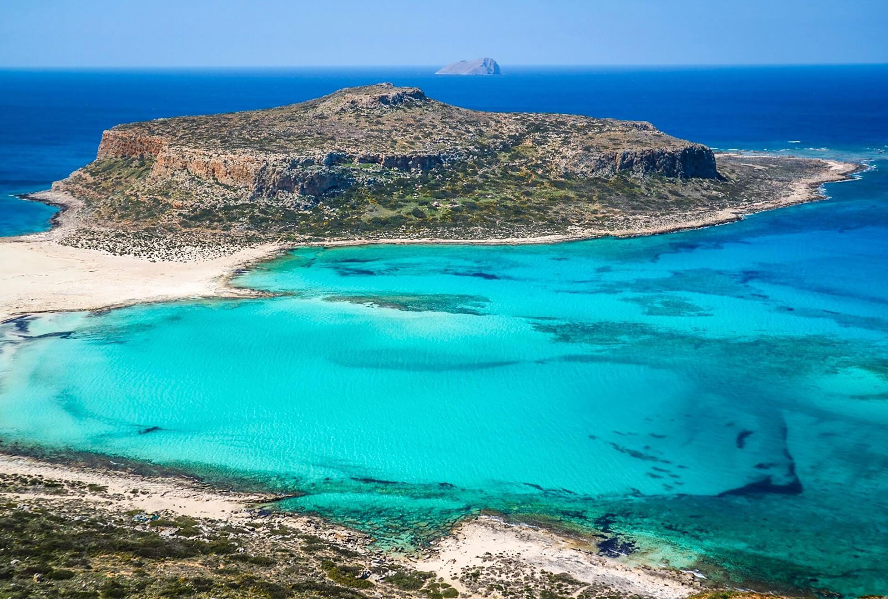
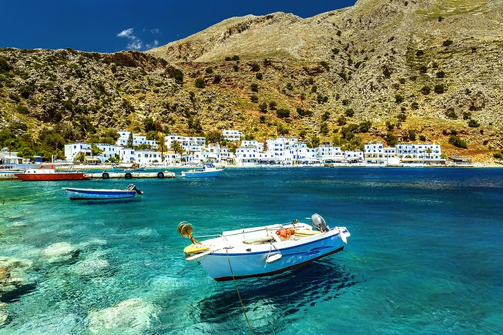
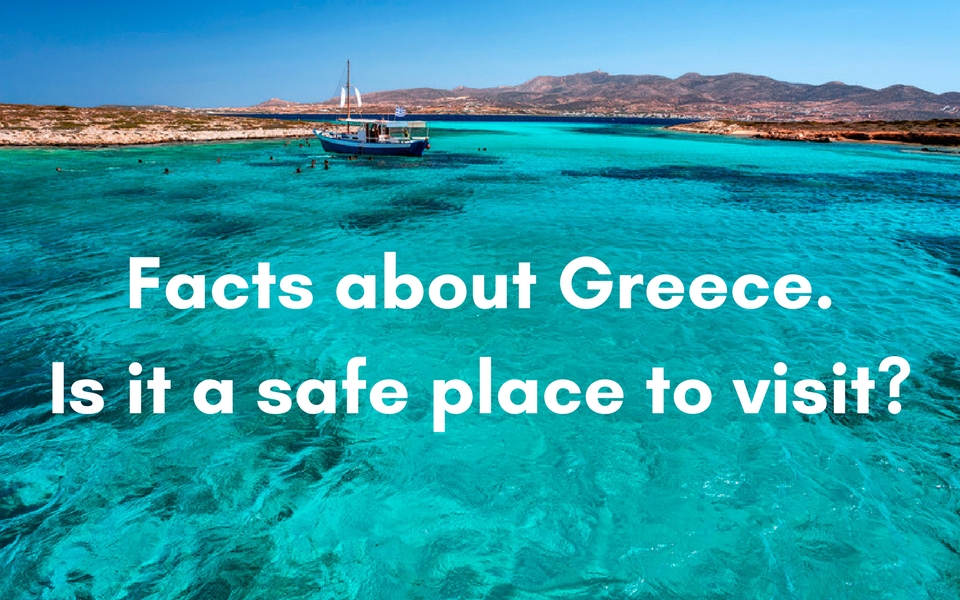
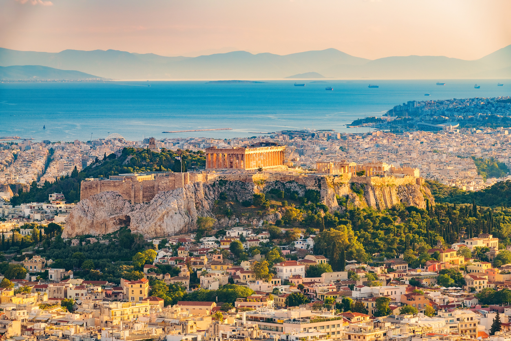

7 reaons to visit Greece
About Greece

Greece is a country in southeastern Europe with thousands of islands throughout the Aegean and Ionian seas. Influential in ancient times, it's often called the cradle of Western civilization. Athens, its capital, retains landmarks including the 5th-century B.C. Acropolis citadel with the Parthenon temple. Greece is also known for its beaches, from the black sands of Santorini to the party resorts of Mykonos.
1.Glorious Masterpieces Of The Ancient Times


If you have never been to Greece, you must rectify this heresy. Whether you are a history buff or not, Greece is home to marvellous monuments and UNESCO heritage sites. Take the time to see the beautiful Acropolis in Athens and its stunning museum, visit the archaeological site of Delphi or the open-air island museum of Delos, the stunning Byzantine monuments of Thessaloniki, the myth-laden Palace of Knossos or the breathtaking medieval Old Town of Rhodes.
2.Ridiculously Delicious Food and Drink


Like other Mediterranean cuisines, Greek food has a reputation for being heart healthy with its heavy use of olive oil, fish, lean meats, vegetables, herbs and grain, although some dishes can be quite rich, like the classic moussaka – a hearty dish made of layers of lamb and eggplant, smothered in béchamel sauce and Greece boasts a great variety of food and drink, with a vast array of Greek wines, local liquors and world-known dishes. Discover food specialties of the islands or the hearty dishes on the mountain villages. Savor fresh seafood and seasonal vegetables cooked with a healthy dose of Greek olive oil. Visiting Greece is a feast for the senses.


3.Full Shot of Vitamin Sea

With its extensive coastline, Greece has a plethora of beaches that seduce everyone. From sandy to pebbly beaches, isolated coves and quiet bays, you will always find somewhere you can soak up some vitamin D.

4. Sensational Greek Islands



Greek islands are in fact heaven on the earth with their glorious beauty of deep blue waters and white and blue houses. The majestic beauty of Santorini is worth seeing where the whitewashed houses are perched on the cliff of the volcano. You can also enjoy many outdoor activities like kite surfing; rock climbing, hiking and diving on the beautiful Greek Islands and stunning landscapes that will make your holiday unforgettable.
5.Greece is affordable

If you are looking for a vacation at a reasonable price, Greece is an ideal destination for you! The cost of living and the cost of accommodation and food in Greece is less expensive as compared to other parts of Europe. Whether you are looking for a luxurious honeymoon package or a reasonable family holiday, Greece has all to offer in one go.
6.A safe place for holidays
Many tourists are concerned about safety in Greece due to political unrest; however, the situation has tremendously changed in the past few decades. The Greek Islands like Crete, Rhodes, and Corfu are the best options for your family holiday where you can have a pleasant and calm holiday and also Greece is a very safe country to travel to. Tourists are unlikely to experience any crime or violence. The only concern is petty crime on the streets, but if you apply the basic precaution measures, your trip should go smoothly.

7.Perfect weather



Generally, the best weather in Greece is what you'll experience in May, June and September. Plenty of sunny days that aren't too hot make May an ideal time for long, leisurely walks in Athens. By June, the beaches of the Aegean islands are warm enough for swimming and popular islands like Mykonos aren't crowded yet. Also The weather in Greece is nice most of the year; with mild temperatures during winter, and the sun shining most of the days. The best time to visit Greece is during shoulder season April- June, and September – October when both prices and weather are good. You will greatly enjoy the beauty of Greece all year round.
Greece is one of the place you should visit because if is affordable and you can have various kind of food.
go to top page